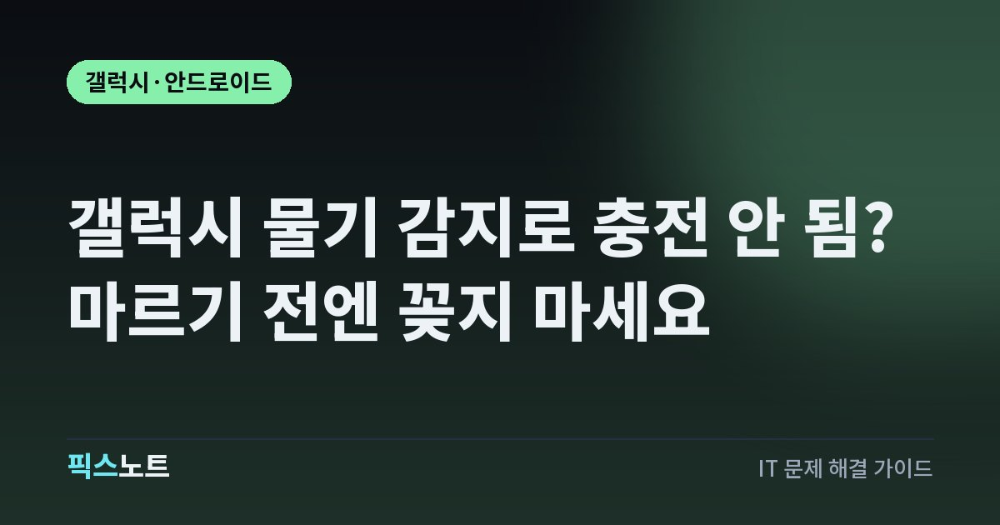

갤럭시 물기 감지로 충전 안 됨? 마르기 전엔 꽂지 마세요
갤럭시 USB 포트 물기·이물 감지 알림으로 유선 충전이 막힐 때 안전한 조치 순서를 정리해요.

갤럭시에 물방울 표시가 뜨고 충전이 멈추면 배터리가 부족해도 케이블을 계속 꽂고 싶어져요. 하지만 물기나 이물이 있는 상태의 충전은 단자 손상으로 이어질 수 있어요. 실제로 젖은 경우와 충분히 말랐는데 경고만 남은 경우를 나눠 확인해야 해요.
물방울 경고가 보이면 케이블부터 빼요
갤럭시가 USB 충전 포트의 물기나 이물을 감지하면 안전을 위해 유선 충전이 차단될 수 있어요. 삼성전자서비스는 이런 상태에서 계속 충전을 시도하면 단자의 부식, 발열, 손상 위험이 있다고 안내해요. 따라서 케이블을 여러 번 꽂아 확인하기 전에 분리하는 것이 먼저예요. 전원이 켜져 있을 때는 물기·이물 감지 팝업이 뜰 수 있고, 전원이 꺼진 상태에서는 충전 불량을 알리는 아이콘이 나타날 수 있어요. 표시 방식은 모델과 소프트웨어 버전에 따라 다르니 화면 모습만으로 고장 여부를 단정하지는 마세요. 방수 기능이 있는 모델이라도 단자가 젖은 상태에서 충전하는 것은 피해야 해요.
물에 빠뜨리지 않았어도 습기를 확인해요
삼성 공식 안내에 따르면 높은 습도만으로도 충전 포트에서 물기 감지 경고가 발생할 수 있어요. 세면대나 비 오는 날 주머니 안처럼 포트 주변이 축축해질 수 있었는지 떠올려 보세요. 케이블 끝부분에 묻은 물기나 충전 단자의 이물도 함께 확인해야 해요. 눈에 보이는 물방울이 없다는 이유로 포트 안쪽까지 마른 것으로 단정해서는 안 돼요. 반대로 경고가 떴다고 반드시 휴대전화 내부에 물이 들어갔다고 판단할 수도 없어요. 액체에 직접 젖은 경우인지, 습한 환경에 있었는지, 케이블을 바꾼 뒤 처음 나타났는지 기록하면 건조 후 재발했을 때 점검에 도움이 돼요.
시원한 바람으로 충분히 말려요
삼성전자서비스는 충전 단자 안의 물기를 털어낸 다음 시원한 바람이나 선풍기를 이용해 완전히 건조하도록 안내해요. 장치를 강하게 흔드는 것은 피하고 부드러운 마른 천으로 겉의 물기를 닦아 주세요. 포트를 아래로 향하게 한 채 통풍이 잘 되는 장소에 두고 물기가 남지 않을 만큼 충분히 기다려야 해요. 뜨거운 드라이어 바람으로 빠르게 말리려는 시도는 하지 않는 편이 안전해요. 충전기 플러그와 케이블 끝도 젖지 않았는지 함께 확인하세요.
- 충전기와 휴대전화를 분리해요.
- 단자를 아래로 향하고 가볍게 물기를 털어내요.
- 마른 천으로 겉을 닦고 선풍기나 시원한 바람으로 완전히 말려요.
완전히 마른 뒤에만 다시 연결해요
경고가 사라지는지 보려고 젖은 상태에서 케이블을 반복해서 꽂지 마세요. 포트가 충분히 마르고 케이블에도 물기가 없을 때 정상 충전되는지 확인해요. 충전이 시작되더라도 금세 끊기거나 물방울 표시가 다시 뜬다면 곧바로 분리하고 재점검하세요. 케이블의 단자 부분에 변색이나 이물이 보이는 경우에는 같은 케이블로 무리하게 충전을 시도하지 않는 편이 좋아요. 제품과 액세서리를 비교할 때는 인증된 충전기와 케이블을 사용하는 것이 삼성의 권장 방식이에요. 단자 속에 날카로운 도구를 넣어 긁거나 임의로 분해하면 문제를 더 키울 수 있어요.
말랐는데 표시가 남는다면 USB 캐시를 봐요
휴대전화와 충전 포트가 완전히 마른 것이 확실한데도 물방울 아이콘이 남아 있다면 먼저 휴대전화를 재시작해 보세요. 삼성의 공식 지원 문서는 경고가 계속되는 경우 USB 관련 앱의 캐시를 지우는 방법도 안내해요. 다만 메뉴 구조는 모델과 One UI 버전에 따라 달라질 수 있고 일부 기기에서는 해당 항목이 보이지 않을 수 있어요. 이런 경우 경로를 억지로 따라 하거나 다른 시스템 앱의 데이터를 지우지 마세요. 반드시 물기가 없다는 전제에서만 시도하고, 캐시 삭제 뒤에도 감지가 계속되면 실제 포트 상태를 점검해야 해요.
- 설정 > 애플리케이션에서 시스템 앱 표시 기능을 찾아요.
- 항목이 보이면 USBSettings 또는 USB 설정 앱의 저장공간을 열어요.
- 캐시 삭제를 선택하고 재시작 뒤 경고가 사라졌는지 확인해요.
무선 충전은 지원 모델에서만 임시로 이용해요
배터리가 부족하지만 USB 포트가 젖어서 케이블을 사용할 수 없다면 무선 충전을 지원하는 갤럭시는 호환 충전 패드로 임시 충전할 수 있어요. 삼성 공식 안내에도 물기 감지 시 무선 충전이 대안으로 제시돼 있어요. 모든 갤럭시가 무선 충전을 지원하는 것은 아니므로 모델별 사양을 확인해야 해요. 패드에 놓을 때는 휴대전화와 충전 패드 사이에 이물이나 방해물이 없는지 보고 위치를 맞춰 주세요. 무선 충전이 된다고 해서 USB 단자가 정상으로 돌아왔다는 뜻은 아니에요. 젖은 장치에 심한 발열이나 이상이 있다면 충전을 중단하고 점검받는 편이 안전해요.
물 아닌 액체에 젖었다면 더 조심해요
바닷물이나 음료처럼 깨끗하지 않은 액체에 노출됐거나 휴대전화를 물에 빠뜨렸다면 물방울 경고만 없애는 데 집중하지 마세요. 삼성전자서비스는 젖은 기기가 당장 정상 작동하더라도 내부 부품에 부식이나 손상이 생길 수 있다고 안내하며 서비스 점검을 권장해요. 방수 성능과 올바른 세척 방법은 모델에 따라 다르므로 모든 기기를 물에 씻거나 담그는 식으로 처리하면 안 돼요. 제품 설명서에서 내 모델의 방수 등급과 관리 방법을 확인하세요. 액체 노출 뒤 충전단자에 색 변화가 보이거나 접촉 불량이 반복된다면 전문가의 확인이 필요해요.
충전 불량이 반복된다면 증상을 남기고 점검받아요
완전히 건조하고 재시작한 뒤에도 경고가 반복되거나 케이블을 바꿔도 유선 충전이 안 된다면 삼성전자서비스에 충전 포트 점검을 문의해요. 모델명, 경고 화면, 물이나 습기에 노출된 시점, 시도한 충전기와 케이블 종류를 정리하면 진단에 도움이 돼요. 휴대전화가 정상으로 켜지고 조작된다면 중요한 사진과 연락처가 동기화되거나 백업돼 있는지 먼저 확인하세요. 배터리가 바닥난 상태에서 무리하게 반복 충전하기보다 안전하게 전원을 유지할 수 있는 방법을 안내받는 것이 좋아요. 케이블을 연결할 때마다 경고가 뜬다면 원인이 해결되기 전까지 유선 충전을 멈춰 주세요.
자주 묻는 질문
갤럭시에 물이 안 닿았는데도 물기 감지가 뜰 수 있나요?
가능해요. 삼성은 습한 환경에서도 물기 감지 알림이 나올 수 있다고 안내해요. 먼저 충전 포트와 케이블이 충분히 마른 상태인지 확인하고, 반복되면 충전 단자를 점검받아 보세요.
갤럭시 물방울 아이콘이 안 없어지면 USB 캐시를 지워도 되나요?
휴대전화와 포트가 완전히 마른 뒤에도 경고가 남는 경우 삼성 안내에 따라 USBSettings 캐시를 확인할 수 있어요. 먼저 건조와 재시작을 하고, 메뉴가 없으면 다른 시스템 앱의 데이터를 임의로 지우지 마세요.
물기 감지 상태에서 무선 충전기로 충전해도 되나요?
무선 충전을 지원하는 모델에서는 호환 패드를 이용한 충전을 검토할 수 있어요. 다만 단자에 물기가 남은 문제를 해결하는 절차는 아니며, 액체에 젖은 뒤 발열이나 이상 증상이 있다면 충전보다 점검이 우선이에요.
수분 감지 알림이 없어졌는데도 갤럭시 충전이 안 돼요?
삼성 인증 충전기와 케이블로 연결해 보고 다른 전원 공급 장치에서도 같은지 확인해요. 물기 감지 이후 접촉이 불안정하거나 충전이 계속 실패한다면 삼성전자서비스에 충전 포트 점검을 문의하세요.